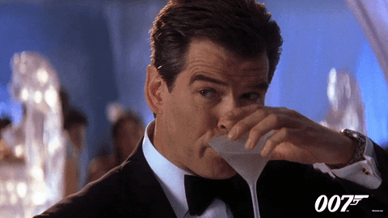

The Famous Vodka Martini

James Bond's cocktail of choice
The Dry Vodka Martini is surely James Bond's most famous cocktail of choice and is
the drink which brought the phrase "shaken and not stirred" to public notoriety. It remains
a classic cocktail and is now as popular as the Gin Martini that it originally evolved from.
Dry Vodka Martini ingredients:
- 45ml of premium vodka (do not use a cheap substitute in this cocktail)
- 22.5ml of dry vermouth (the less vermouth used, the drier the Martini will be)
- A lemon twist or 3 olives
- Ice cubes
Method:
- Pour the vodka and vermouth into a mixing tin filled with the ice cubes
- Shake the mixture don't stir it!
- Strain off the liquid into a chilled Martini glass or else a cocktail glass
- Garnish with the lemon twist or olives